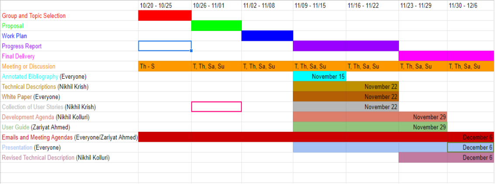

Background & Planning
1. Group Compact
The first task at hand was to create a group compact amongst ourselves to set what we expected from one another.
The intended purpose was to create guidelines for ourselves to ensure everyone is doing their portion of the project
and set guidelines for possible issues we may encounter. These included thoughts on team and individual norms,
project management tools and communication.
Some of the main points in the compact were:
-
We plan to use discord and email as the main means of communication, but may join Zoom calls when appropriate.
-
As a group, we have decided that on-time completion of tasks by all group members is very important.
Our goal is to finish work with buffer time before the deadline, so that we never fail to meet deadlines.
-
We intend to use Discord for most of our communicating, since it will allow us to rapidly reach one another.
-
In general, prior to starting work, we intend to talk to each other to form a plan of action.
2. Background
After discussing amongst ourselves we found that the lack of transparency in company supply
chains is an alarming reality which allows companies to maintain a public image of supporting social-justice concerns
while simultaneously profiting off of grossly unethical incidents in their supply chain.
2.1. Examples of Company Misconduct
Members of the Uyghur ethnic minority were found working under conditions that strongly suggest
forced labor in the supply chains of more than 80 well-known brands, including Apple, BMW, Nike,
and Samsung [1]. A factory producing shoes for Nike had watchtowers, barbed wire fences, and police
guard boxes [1]. Further, Uyghur workers were unable to go home for holidays [1]. However, media
coverage has allowed attempts at solving the problem. More than 190 organizations spanning 36
countries issued a call to action, seeking formal commitments from clothing brands to cut all ties
with suppliers implicated in Uighur forced labor and to end all sourcing from the Xinjiang region [2].
Oxfam surveys showed that 90% of women working on grape farms in South Africa reported not having
enough to eat in the previous month [3]. They also showed that 75% of the women working on fruit
or vegetable farms said that they or a family member missed meals in the previous month because
they could not afford enough food [3]. In the U.S., Oxfam ranked six large retailers including Albertson,
Costco, Kroger, Walmart, and Whole Foods, and found that all six need to radically improve transparency
around their food sourcing policies and show that their suppliers respect labor and human rights [3].
Dysprosium and terbium mining occur in Jianxi, China. Both are essential for manufacturing laptops,
smartphones, speakers, and other modern technology [4]. Only ~0.2% of mined clay contains these materials,
so the remaining 99.8% is dumped into hills and streams [4]. This process produces 75,000 liters of acidic
water and one ton of radioactive waste for every ton of rare earth materials [4].
3. Our Solution
3.1. What is Re-maximizing?
Re-maximizing is a software-based automatic ethical evaluation pipeline consisting of web-scraping
capabilities to identify publicly available press which hints at the ethics of an organization,
domain-specific machine-learning models trained off of identifying features present in prior instances
of ethical misconduct, and data visualization capabilities to succinctly and accurately display key
signals of the ethics of an organization in areas such as monetary inequality, environment impact,
unfair outcomes along racial lines.
3.2. Why Re-maximizing?
The purpose of our product is to raise awareness for potentially unethical practices present within corporations
and in doing so, cause pressure for change. It is very difficult to change an organization when the problems to
change are not known, so we hope that our product can provide the starting point for positive change by increasing
transparency. We hope to achieve this transparency both for companies about their own supply chain and for
consumers about the companies they buy from. It is possible that organizations may be unaware of certain unethical
practices within their supply chain, so we hope that our software can provide greater clarity here. We also hope
to prevent instances where well-intentioned consumers end up inadvertently supporting unethical companies because
instances of misconduct are hidden.
4. Planning
As a next step, we created a Work Plan to show who would be tasked with which assignments.
Our individual roles were:
-
Zariyat Ahmed will be responsible for submitting our work and making sure we are on track to fulfill project requirements by the required deadlines.
-
Nikhil Kolluri will be responsible for reviewing all work before submission and comparing our work to the project requirements to ensure all requirements are met.
-
Nikhil Krish will be responsible for understanding the workload and requirements for each assignment, as well as distributing subtasks evenly based on their complexity and estimated completion time. He will also be responsible for compiling collective work.

Figure: Gantt Chart for work distribution